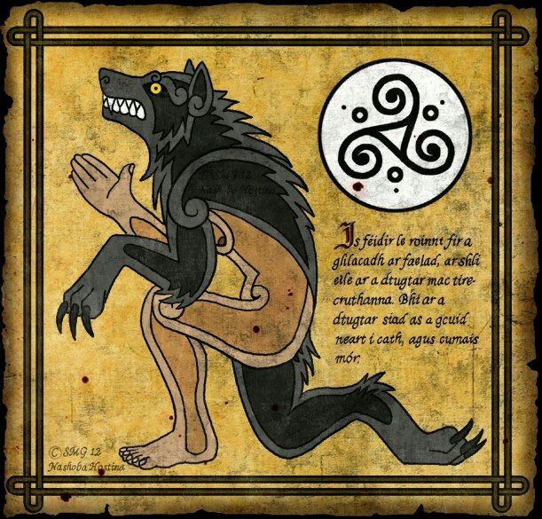

Los hombres lobo, también conocidos como licántropos, son criaturas legendarias presentes en diversas culturas alrededor del mundo. Se trata de humanos que pueden transformarse en lobos, ya sea por una maldición, un hechizo o una condición hereditaria.
Los celtas creían que muchas de estas criaturas podían cruzar entre nuestro mundo y el Otro Mundo, un lugar místico lleno de maravillas, donde el tiempo funciona de manera diferente y las almas de los héroes descansan. Las leyendas célticas han influenciado enormemente la fantasía moderna, desde los relatos de hadas hasta las historias de elfos y duendes.
Origen y Historia El mito del hombre lobo tiene raíces en la mitología protoindoeuropea, donde la licantropía estaba relacionada con rituales de iniciación guerrera. En la antigüedad clásica, los griegos ya hablaban de hombres que se transformaban en lobos. Heródoto mencionó a los Neuri, una tribu que se convertía en lobos una vez al año. También está la historia del rey Licaón, quien fue castigado por Zeus y transformado en lobo por sacrificar un niño. En la Edad Media, la creencia en los hombres lobo se intensificó, y muchas personas fueron acusadas de licantropía y ejecutadas. En el siglo XIX, el caso de Manuel Blanco Romasanta, un asesino en España que afirmaba ser un hombre lobo, reforzó la leyenda
Características y Transformación Los hombres lobo suelen transformarse bajo la influencia de la luna llena. En su forma animal, pueden parecer lobos gigantes o criaturas híbridas con rasgos humanos. La transformación es descrita como un proceso doloroso, donde los huesos se alargan y la piel se cubre de pelo
Existen otros más importantes, como lo son:
Es el más conocido en el folclore europeo. Se transforma bajo la luna llena y pierde el control, convirtiéndose en una bestia feroz. Se dice que solo puede ser eliminado con una bala de plata.
A diferencia del clásico, este tipo puede transformarse a voluntad. En algunas leyendas, los chamanes o brujos adquirían esta habilidad mediante rituales o pactos con fuerzas sobrenaturales.
En muchas historias modernas, la licantropía es una enfermedad que se transmite por la mordida de otro hombre lobo. Quienes son mordidos sufren una transformación progresiva y deben aprender a controlar sus instintos.